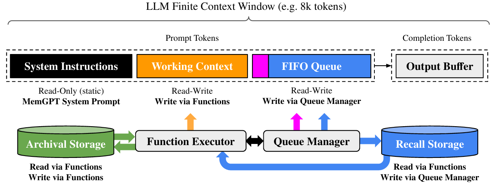
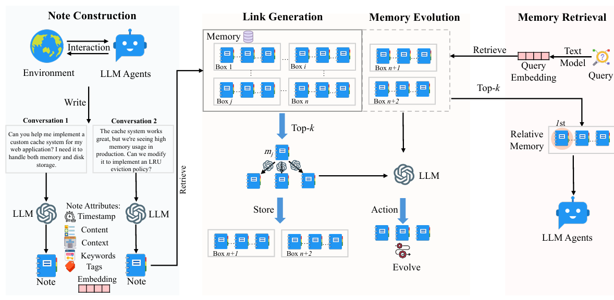
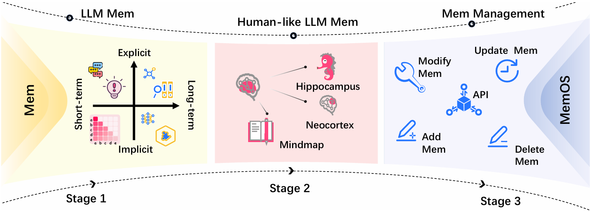

8.2 当前记忆系统
8.1 讨论的是记忆为什么重要、应当保存什么。到了 8.2，问题变成：系统怎样把这些状态真正写进去、组织起来，并在下一次任务中重新找出来。本节不会穷举所有记忆产品，而是沿着几条代表性路线，观察 2023 年到 2025 年的设计变化。
这些工作回答的问题并不相同。MemGPT/Letta 关心怎样用有限上下文模拟更大的记忆空间；Mem0 关心怎样把记忆能力做成低开销、可调用的工程接口；Generative Agents 把记忆与反思、计划连成一个行为循环；MemoryBank 研究记忆怎样随时间衰减和被强化；A-MEM 关注记忆之间怎样建立关系并互相修正。LoCoMo 则不是记忆系统，而是用来检验这些系统的评测基准。把研究系统、工程框架和评测工具放在同一条时间线上，更容易看清领域是怎样发展的。
8.2.1 从扩展到组织：代表性路线的时间线
早期工作的共同出发点是上下文窗口不够用，但解决思路逐渐发生了变化。最初，研究者想把窗口”变大”；随后，人们发现更重要的是把信息分层、压缩、更新和路由。下面的时间线给出了本节讨论的主要节点。具体产品仍在持续迭代，表中的日期以代表性论文、正式发表或官方发布为准。
表 8-4 代表性记忆工作的发展脉络
| 时间 | 对象 | 教材中的定位 | 主要变化 |
|---|---|---|---|
| 2023.04 | Generative Agents | 研究系统 | 用记忆流、反思和计划支撑连续行为 |
| 2023.05 | MemoryBank | 研究系统 | 引入遗忘、强化和动态用户画像；AAAI 2024 正式发表 |
| 2023.10 | MemGPT | 研究系统 | 借鉴操作系统虚拟内存，分层管理上下文 |
| 2024.02 | LoCoMo | 评测基准 | 构建超长多会话数据与多类记忆任务 |
| 2024.09 | Letta | 工程框架 | 区分 MemGPT 设计模式与 Letta 工程实现 |
| 2025.02 | A-MEM | 研究系统 | 让记忆形成关联网络并随新信息演化 |
| 2025.04 | Mem0/Mem0g | 生产导向方法 | 统一记忆提取、整合、检索与图关系表示 |
| 2025.04 | Letta 睡眠期计算 | 工程扩展 | 把记忆整理从在线响应路径移到异步后台 |
从这条时间线可以看到几个方向。记忆对象由原始对话逐渐变成提取后的事实、结构化笔记和关系网络；写入方式从”遇到内容就追加”发展为合并、更新和遗忘；检索从单次相似度匹配扩展到按类型路由、图遍历和多信号融合；记忆维护也从每次回答前同步完成，逐渐转向后台整理。这些变化都没有绕开成本和可靠性，只是把复杂度从上下文窗口转移到了存储、索引和更新策略中。
8.2.2 MemGPT 与 Letta：把记忆当作操作系统
加州大学伯克利分校团队在 2023 年提出 MemGPT，其核心是”虚拟上下文管理”。它借用操作系统的分层思路：CPU 寄存器容量很小但访问很快，硬盘容量大但需要显式调入。对应到语言模型，常驻上下文相当于快速工作区，外部数据库和事件日志相当于较慢的长期存储。模型通过函数调用提出读写请求，系统再完成内容搬运。这种设计让一个有限的上下文窗口表现得像拥有更多可用记忆。[1]
MemGPT 把与模型直接相关的记忆分成三层。三层之间不存在物理意义上的寄存器和硬盘，它们是一种便于理解的设计类比。
表 8-5 MemGPT 的记忆层级
| 记忆层级 | 类比 | 保存什么 | 使用方式 |
|---|---|---|---|
| Core Memory | 寄存器与缓存 | 系统提示、角色定义、用户画像和当前关键状态 | 始终位于上下文中，语言模型可直接读取和修改 |
| Recall Memory | 系统日志 | 原始对话与事件流 | 按时序回放，或从时间窗口中检索 |
| Archival Memory | 外部存储 | 历史文档、笔记和长期对话 | 先被显式调入上下文，再参与当前回答 |

图 8-1 MemGPT 的主上下文、检索存储与归档存储（机制见文献[1]）
这一架构的关键不只是”外挂数据库”，而是让语言模型参与记忆管理。模型需要判断哪些信息值得放进口袋里的 Core Memory，哪些内容可以留在外部；当上下文接近上限时，系统还要在对话和记忆操作之间切换。function calling 驱动的 agent loop，指的就是这种由模型发起工具调用、系统执行、结果再回到模型的循环。设计上的难点也在这里：写入是否值得、搬运是否及时、模型调用失败后状态是否一致，都会直接影响记忆质量。
2024 年，MemGPT 背后的工程继续演进，并采用 Letta 作为代理框架名称。更准确的区分是：MemGPT 指最初论文中的自编辑记忆设计模式，Letta 指支持工具、数据源、持久化代理和记忆管理的工程框架。[2]这一拆分有助于我们把概念贡献和产品实现分开理解。
Letta 把 Core Memory 进一步拆成多个 Memory Blocks。每个 Block 带有标签、模板和当前值，可以用结构化 JSON 保存，也可以通过工具修改。这比一整块系统提示更接近”带索引的抽屉”：人物偏好放在一个 Block，当前任务放在另一个 Block，系统规则又可以单独维护。结构变清楚以后，代理能更有针对性地读写，人和调试工具也更容易看懂当前记忆。
2025 年公开的睡眠期计算进一步把记忆维护移出在线响应路径。主代理负责和用户交互，睡眠期代理在没有即时请求时整理记忆、合并信息并修改主代理的 Memory Blocks。[3]这样做有两个好处：用户不必等待长篇整理过程，记忆也可以从零散增量变成更连贯的摘要。代价是后台计算仍然需要资源，异步写入还可能带来时序问题，例如主代理在整理完成前又产生了新信息。睡眠期计算因此更像一种调度策略，并不能自动保证记忆正确。
8.2.3 Mem0 与 Mem0g：为不同查询组织记忆
Mem0 团队在 2025 年的论文中把目标定得更接近工程落地：在持续对话中动态提取、整合和检索重要信息，减少反复处理完整历史的成本。[4]它并不把每次交互原文直接塞进长期库，而是先让语言模型提取候选事实，再与已有相似记忆比较，决定新增、更新、删除或保持原状。这一提取与更新两阶段流程，是 Mem0 和简单”向量数据库加搜索”的关键区别。
可以用三类查询说明为什么一种存储不够。模糊主题适合向量检索，精确事实适合键值查找，多跳关系适合图结构。统一接口的意义在于，应用只调用 add 或 search，不必在业务代码里判断该访问哪种数据库。
表 8-6 不同查询类型与记忆组织的对应关系
| 查询类型 | 示例 | 适合的组织方式 | 原因 |
|---|---|---|---|
| 语义相似 | 上周讨论过哪些智能体漂移问题 | Vector | 用嵌入向量召回语义接近但措辞不同的内容 |
| 精确事实 | 用户登记的手机号是什么 | KV | 按键值直接查找，适合稳定字段和精确匹配 |
| 关系推理 | 哪些客户共享同一个开票主体 | Graph | 沿实体关系进行多跳遍历 |
这里的 Vector、KV 和 Graph 更适合被理解为三种索引思想，而不是要求每个版本的产品都固定使用三套数据库。Mem0 的基础方法重点使用语义检索与增量更新；Mem0g 再增加图结构，把实体和关系显式保存，以便处理相互关联的事实。同一个系统也可能用 SQL 保存事实和元数据、用向量库保存嵌入、用实体图支持关系召回。教材关心的是查询与组织的匹配，而不是某一种后端产品。
Mem0 的论文在 LoCoMo 实验设置中报告，相比把所有历史放进上下文，其方法显著降低了响应延迟和 token 成本；论文摘要给出的数字是 p95 延迟降低约 91%，token 成本节省超过 90%。[4]这些结果说明了”只取相关记忆”在工程上的价值，但它们是特定实验条件下的结果，不能直接外推成所有真实业务的性能承诺。同样，图结构也不是越多越好。实体抽取、关系维护和图遍历都会增加写入成本，具体任务是否需要还得依靠评测决定。
8.2.4 Generative Agents：让记忆参与反思与计划
Stanford 团队在 2023 年提出的 Generative Agents，把记忆放在一个持续行动的角色内部，而不只是检索模块。[5]每个角色把经历写成带时间戳的自然语言条目，组成 Memory Stream。条目创建时由语言模型评估重要性，系统再综合新近程度、重要性和与当前情境的相关性，选出需要进入当前决策的内容。
当近期记忆的重要性累计到一定程度，系统触发 Reflection。反思不是简单重复原记录，而是从多段经历中形成更高层的判断，例如”这个人重视准时”或”那家店周六不营业”。这些判断重新写回记忆流，成为后续行为的依据。Planning 再把高层结论展开成当天计划和更细的行动序列，经典实现采用约 15 分钟的行动粒度；新的观察进入后，计划还可以调整。
这里形成了一个闭环：经历进入记忆，记忆经反思生成概括，概括影响计划，计划执行又产生新经历。这让记忆从”回答问题时可查的资料”变成”决定下一步做什么的状态”。它的代价是调用链更长，一次行为可能涉及多次打分、反思和计划；若反思把偶发事件概括成稳定特征，错误还会进入后续决策。论文实验也观察到代理会记住内容，但有时会加入原对话并不存在的细节，这提醒我们”会生成记忆”本身就带来一致性风险。[5]
8.2.5 MemoryBank：记忆会遗忘，也会被强化
中山大学等团队在 2023 年提出 MemoryBank，并把长期陪伴场景作为主要对象。系统保存每日对话、事件摘要和不断变化的用户画像，并通过检索把相关经历带回当前回答；论文后来发表于 AAAI 2024。[6]它和只追加记录的方案最大的区别，是为记忆设置了明显的生命周期。
MemoryBank 借鉴艾宾浩斯遗忘曲线：一条记忆随时间流逝可能逐渐减弱，但如果再次被回忆或使用，它的强度就会提高，保留时间也会延长。可以把它想成一本经常翻阅的笔记：总被用到的页会留下，长期无人使用的页逐渐淡出。这一机制同时沿”数据维度”和”自然语言维度”工作：一边根据时间与访问频率调整保留，另一边由语言模型总结用户性格和经历。
这种动态更新让系统有机会越用越了解用户，也避免数据库无限膨胀。它同时暴露了一个长期问题：遗忘规则是预测，不是事实。某个偏好很久没被提起，不代表它已经失效；一次情绪化表达也不一定应当成为稳定用户画像。论文中的遗忘模型是对人类记忆的简化，适合展示生命周期思想，距离可靠处理复杂隐私、例外和人格变化仍有距离。[6]
8.2.6 A-MEM：从独立条目到可演化的记忆网络
罗格斯大学等团队在 2025 年提出 A-MEM，提供了一种更主动的记忆组织方式。它受 Zettelkasten 卡片笔记法启发：每一条记忆不是孤立的文本块，而是一张有上下文、标签和链接的卡片。[7]新内容进入系统后，会先生成结构化记忆笔记，其中包含原始内容、时间戳、关键词、标签、语言模型生成的上下文描述、嵌入向量和相关链接。
写入过程包含三个连续动作。第一步是 Note Construction，把交互加工成自包含的笔记；第二步是 Link Generation，检索已有记忆中可能相关的条目，让语言模型判断是否建立连接；第三步是 Memory Evolution，新笔记可能改变旧笔记的上下文、关键词或标签，使整个网络重新理解过去的信息。这与把每条记忆当作不可更改的独立向量有明显区别：旧记忆也会随新证据被修订。

图 8-2 A-MEM 的笔记构建、关联与记忆演化（机制见文献[7]）
检索时，系统先用查询向量找到种子记忆，再沿已建立的关系扩展相邻条目。这个过程可以概括为”向量找种子，图遍历扩展”，从而获得更完整的上下文。例如，用户问”为什么这个项目改了发布时间”，直接命中的可能只是一条会议记录；沿关系还能带回需求变更、供应链延迟和负责人的说明。这适合跨记忆的多跳推理，也让系统有机会发现零散事实之间的共同模式。
A-MEM 的代价同样来自”演化”。新记忆修改旧记忆，意味着系统必须处理版本、证据和错误传播；如果一条错误笔记被连接到很多条目，影响可能沿着图扩散。关系越多，检索路径和存储成本越高，语言模型在建立连接时也会产生额外调用。它比单纯的向量检索更接近知识组织，却也更依赖更新规则是否可控。
8.2.7 LoCoMo：检验”真的记得”还是”碰巧答对”
前面的系统都在提出机制，LoCoMo 解决的则是怎样比较它们。北卡罗来纳大学教堂山分校等团队在 2024 年发布这一长期对话记忆评测基准，它不属于某一种记忆架构。[8]数据集包含 50 段长对话，每段平均约 300 轮、9K token，平均跨越约 19 个会话，最长可达 35 个会话。对话由人物设定和事件图驱动，并经过人工检查，以保证长距离一致性。
LoCoMo 不只考回忆单条事实。问答部分包含单跳、多跳、时序、开放域常识和对抗性五类问题。单跳问题在一个会话内就能找到答案；多跳问题要求合并多个会话的信息；时序问题要理解事件先后；开放域问题要结合对话内信息与外部常识；对抗性问题故意设置无法回答或前提错误的请求，检验系统是否会编造答案。
除问答外，基准还要求系统整理事件摘要，并进行多模态对话生成。这样的设计区分了三种能力：能不能找到相关记忆，能不能把跨时间的因果和事件关系组织起来，以及能不能用这些记忆生成前后一致的回应。如果只看单轮问答，系统可能凭当前上下文猜对；放到几十个会话之后，记忆是否稳定、是否被正确归属、是否混淆人物和时间，才更容易暴露出来。
论文结果显示，长上下文模型和 RAG 都能改善部分问答表现，但与人类仍有明显差距，时序推理和对抗性问题尤其困难。[8]“所有现有方案整体不及格”这一概括强调的是差距之大。这里的”不及格”没有统一分数线，也不是说每个方案所有指标都失败；更准确的理解是，在非常长期的对话里，现有系统普遍还不能稳定达到可用的人类水平。这正是评测基准的价值：它把”感觉效果不错”转成可以复现和比较的失败案例。
8.2.8 五类系统的横向比较
把前面五个记忆系统放在同一张表里，会发现它们不是同一种做法的不同实现。MemGPT/Letta 以操作系统的分层和分页为核心，Mem0 以提取、整合和多类查询为核心，Generative Agents 以经历、反思和计划为核心，MemoryBank 以动态衰减和用户画像为核心，A-MEM 以记忆网络和条目演化为核心。比较它们时，首先要问各自把哪一段记忆生命周期做得最深。
读这张表时，不必寻找一个总体最高分。先看某套系统保存什么，再看它何时修改旧内容，最后看查询时靠什么找到相关信息。表中的”优势与边界”描述的是设计重心带来的直接后果；同一套机制换到不同任务、模型和数据规模后，实际表现仍可能变化。
表 8-7 代表性记忆系统比较
| 系统 | 核心问题 | 主要组织形式 | 更新与检索 | 优势与边界 |
|---|---|---|---|---|
| MemGPT/Letta | 有限窗口怎样表现得更像无限记忆 | 核心、回忆、归档三层；Letta 用结构化 Blocks | 模型调用记忆工具；睡眠期异步整理 | 分层灵活；依赖模型决策，写入与并发一致性复杂 |
| Mem0/Mem0g | 怎样低成本提取并取回对话中的关键信息 | 提取事实、向量索引；可选实体关系图 | 新增、更新、删除、合并；按查询路由 | 工程开销较低；依赖提取质量，存储与版本变化会影响结果 |
| Generative Agents | 记忆怎样支持可信的连续行为 | 带时间戳的自然语言记忆流 | 相关性、新近性和重要性检索；反思与计划 | 形成行为闭环；调用链长，反思可能放大细节偏差 |
| MemoryBank | 记忆怎样随时间衰减和被强化 | 对话、事件摘要、用户画像 | 基于时间与访问的遗忘、强化 | 强调生命周期；遗忘模型简化，长期人格变化难处理 |
| A-MEM | 独立记录怎样支持跨记忆推理 | 结构化笔记、向量、链接网络 | 新增时建链并修订旧笔记；种子检索后图扩展 | 多跳上下文更完整；更新成本高，错误可能沿网络传播 |
可以从四个轴继续比较。第一，记忆粒度：Generative Agents 保留较多原始经历，Mem0 更偏向提炼事实，A-MEM 则把原文加工成带语义说明的笔记。第二，控制方式：MemGPT 和 Letta 让语言模型通过工具决定何时读写，MemoryBank 更依赖时间与访问规则，A-MEM 在写入时自动触发关系的生成和演化。第三，生命周期：有的系统主要追加，有的会合并、改写或遗忘。第四，检索方式：有全文重读、向量召回、多存储路由，也有图遍历和多种分数融合。
这些维度之间经常需要交换。保留原文有利于追溯，但会增加存储和检索噪声；提炼事实便于快速使用，却可能丢掉语气、例外和因果关系；图结构擅长多跳关系，但构图和更新更贵；异步整理降低响应延迟，却增加状态时序和并发控制难度。因此，“采用哪种记忆系统”不能只看向量库大小或演示效果，而要先明确任务需要的是事实召回、事件追溯、关系推理，还是用户画像。
8.2.9 从更多系统看记忆设计谱系
前面的五个案例主要展示了记忆流、分层存储和显式事实管理。进一步观察其他代表性工作，还能看到几条补充路线。Reflexion 把任务失败后的语言反思写入独立经验库，下次遇到相似任务时不必重新踩一遍同样的坑；Voyager 则把成功的动作序列整理成可执行代码并加入技能库，把”发生过什么”进一步转化为”以后怎样做”。这两种做法都说明，可供复用的经验既可能是叙事，也可能是可执行程序。[26][27]
LongMem 采用另一条思路：主语言模型保持冻结，通过侧路网络和缓存记忆处理超长历史。它把记忆能力部分做进模型运行机制，而不是只在外部数据库与应用层之间搬运文本。HippoRAG 和 Zep/Graphiti 则偏重关系与时间：前者从文本建立实体关系图并沿图进行多跳检索，后者用带有效时间的事实关系记录偏好和状态如何变化。对于”曾经喜欢 Java，后来改用 Python”这类问题，单纯的当前事实表往往不够，时序图能保留事实从何时开始、何时失效。[28][29][30]
MemOS 进一步把记忆提升为系统级资源，试图统一管理参数记忆、激活态记忆、明文记忆和图结构记忆，并考虑多个智能体之间的隔离、共享、迁移和生命周期审计。这代表了一种从”给模型外挂一个记忆插件”向”为智能体提供统一记忆操作系统”的变化。它的价值不只在检索，还在于不同记忆形态使用同一套治理与调度规则。

图 8-3 MemOS 对异构记忆资源的统一管理（机制见文献[31]）
这些补充路线可以归纳为四个设计维度。第一，复用对象可以是事件、语言反思或可执行技能；第二，记忆可以与模型运行机制结合，而不只存放在外部库；第三，关系和时间可以成为一等索引，而不只是附加元数据；第四，系统层需要统一治理异构记忆。它们没有取代先前案例，反而说明长期记忆并不存在一种”标准架构”，不同任务需要在保真、更新、推理、成本和治理之间做取舍。
8.2.10 发展脉络与仍未解决的问题
从 2023 年到 2025 年，记忆系统大致经历了五个变化。第一，目标从扩大上下文转向组织状态。模型不必一次看到全部历史，而是要能选择正确的状态。第二，记忆从原始文本转向提炼后的事实、摘要和结构化条目。第三，组织从独立记录转向多层、多索引和关系网络。第四，维护从同步追加转向合并、遗忘、反思和异步更新。第五，研究从展示单个系统转向用长对话基准做横向评测。
这些变化不是简单替代。MemGPT 的分层仍能解释 Letta 的 Blocks，Generative Agents 的反思仍对应”把事件沉淀成更高层状态”，MemoryBank 的生命周期问题也仍在今天的冲突处理与遗忘策略中出现。A-MEM 和 Mem0g 则把早期系统中的关联需求进一步显式化。回头看，领域真正积累下来的不是某一种数据库，而是几条相对稳定的设计问题：写入什么、何时更新、怎样取回、如何遗忘，以及怎样证明效果。
仍未解决的问题也很集中。长期记忆中的事实可能随时间变化，系统需要区分”曾经为真”和”现在仍为真”；用户在不同任务中可能有不同偏好，系统需要控制作用域；自动提取和反思可能产生看似合理但未经证实的记忆；异步维护和多代理共享记忆会带来覆盖与并发冲突；记忆数量增长后，召回延迟、存储成本和隐私风险都会上升。LoCoMo 提供了共同考试题，但它主要衡量长期对话能力，并不能穷尽真实产品中的权限、审计、纠错和多模态长期状态问题。
如果要在具体应用中选型，可以先回答六个问题：系统需要记住的是事实、事件、流程，还是关系？一条记忆由谁写入，是否可以追溯来源？旧信息和新信息冲突时按什么顺序处理？读取时需要向量、精确键值、时间窗口还是图遍历？响应延迟和整理成本分别能承受多少？最后，怎样用任务级指标证明记忆确实改善了结果？这些问题比”用了哪个框架”更能决定记忆系统是否可靠。
记忆研究还可以沿四条相互关联的路线继续展开：评估定义什么叫”好记忆”，注意偏向决定什么值得进入记忆，巩固把零散情景提炼成可泛化结构，强化学习则根据长期任务反馈调整保存、检索与遗忘策略。其中，记忆评估不应只测事实准确率，还要观察时间理解、知识更新、干扰抵抗、合理遗忘和认知合理性。这组维度把”记住”与”记对、记新、知道何时不用”区分开来，也为后续系统设计提供了更完整的评价目标。
8.2.11 本节小结
当前记忆系统已经从”把历史放进更大上下文”发展为多种状态工程路线。MemGPT/Letta 把有限窗口分成可调度的记忆层级；Mem0 强调从对话中提取、整合并高效检索信息；Generative Agents 把记忆、反思与计划连起来；MemoryBank 关注遗忘、强化和用户画像；A-MEM 用笔记网络表达记忆之间的关系和演化。LoCoMo 则提醒我们，系统能否讲清架构，不等于它真的能在长期对话中找对、用对信息。
这些方案没有统一赢家。原始记录、结构化事实、用户画像和关系网络各自保存不同状态，适合不同查询。一个好系统通常需要组合多种表示，并为每类状态设计独立的写入、更新、读取、遗忘和权限规则。下一部分将进一步回到认知学，看看人类记忆的分类与规律，如何为这些工程取舍提供新的解释框架。
8.2.12 思考与讨论
1. MemGPT 的 Core、Recall、Archival 三层能否直接对应 8.1 中的工作、情景和语义记忆？请说明哪些地方可以对应，哪些地方不能简单画等号。
2. 如果要回答”一个项目的两次延期分别由什么原因造成”，你会选择向量检索、图遍历、事件时间线，还是多种方式结合？请给出理由。
3. 为什么一个系统在 LoCoMo 上取得了更高分数，仍不能证明它适合作为个人工作助手？请从数据范围、权限、纠错和真实延迟四个方面讨论。